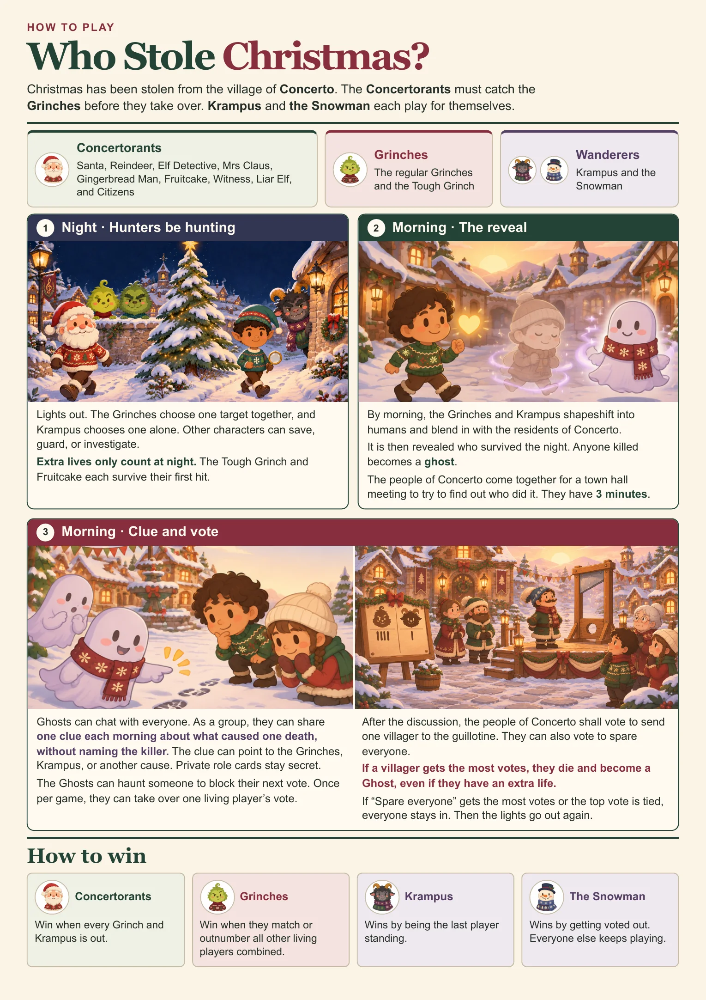

How to Play Who Stole Christmas?

Christmas has been stolen from the village of Concerto. The Concertorants must catch the Grinches before they take over. Krampus and the Snowman each play for themselves.
Concertorants
Santa, Reindeer, Elf Detective, Mrs Claus, Gingerbread Man, Fruitcake, Witness, Liar Elf, and Citizens
Grinches
The regular Grinches and the Tough Grinch
Wanderers
Krampus and the Snowman
Night · Hunters be hunting
Lights out. The Grinches choose one target together, and Krampus chooses one alone. Other characters can save, guard, or investigate.
Extra lives only count at night. The Tough Grinch and Fruitcake each survive their first hit.
Morning · The reveal
By morning, the Grinches and Krampus shapeshift into humans and blend in with the residents of Concerto.
It is then revealed who survived the night. Anyone killed becomes a ghost.
The people of Concerto come together for a town hall meeting to try to find out who did it. They have 3 minutes.
Morning · Clue and vote
Ghosts can chat with everyone. As a group, they can share one clue each morning about what caused one death, without naming the killer. The clue can point to the Grinches, Krampus, or another cause. Private role cards stay secret.
The Ghosts can haunt someone to block their next vote. Once per game, they can take over one living player’s vote.
After the discussion, the people of Concerto shall vote to send one villager to the guillotine. They can also vote to spare everyone.
If a villager gets the most votes, they die and become a Ghost, even if they have an extra life.
If “Spare everyone” gets the most votes or the top vote is tied, everyone stays in. Then the lights go out again.
How to win
Concertorants
Win when every Grinch and Krampus is out.
Grinches
Win when they match or outnumber all other living players combined.
Krampus
Wins by being the last player standing.
The Snowman
Wins by getting voted out. Everyone else keeps playing.